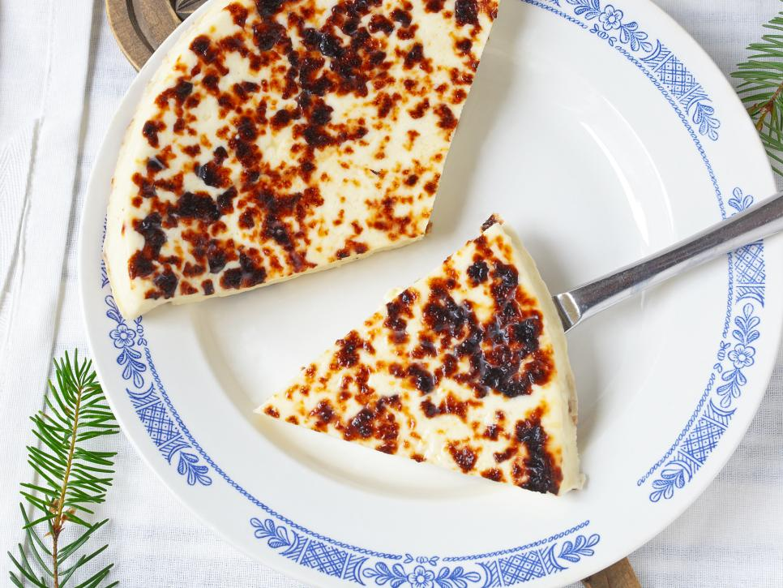
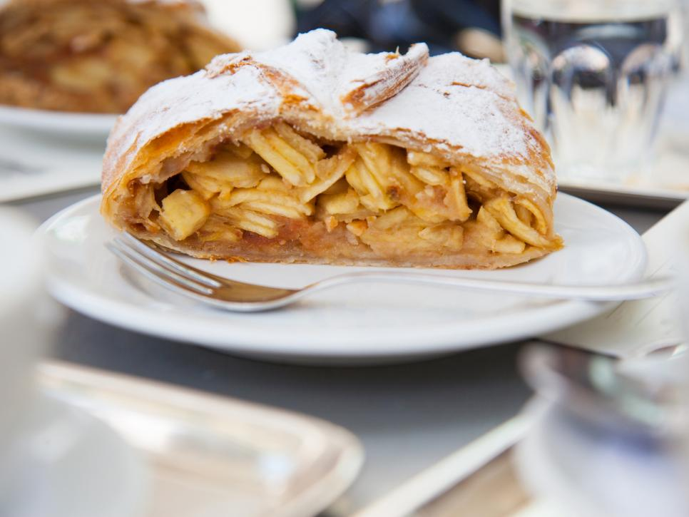
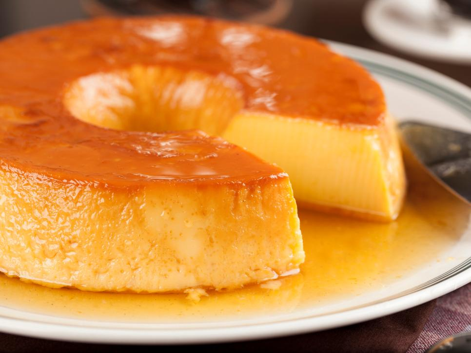
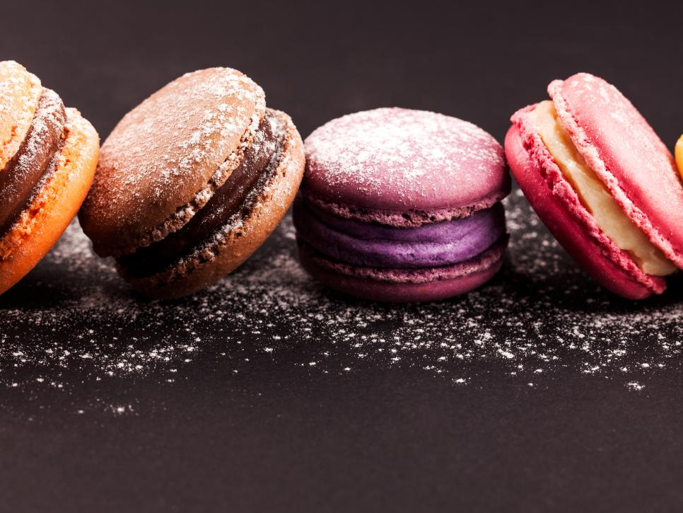
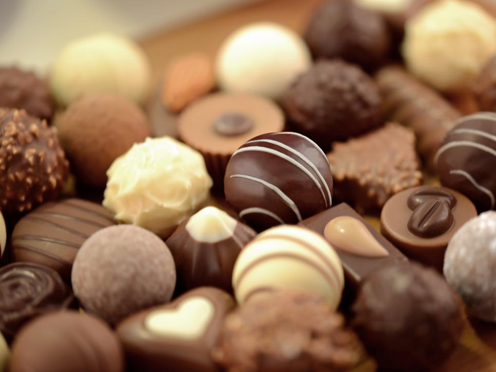
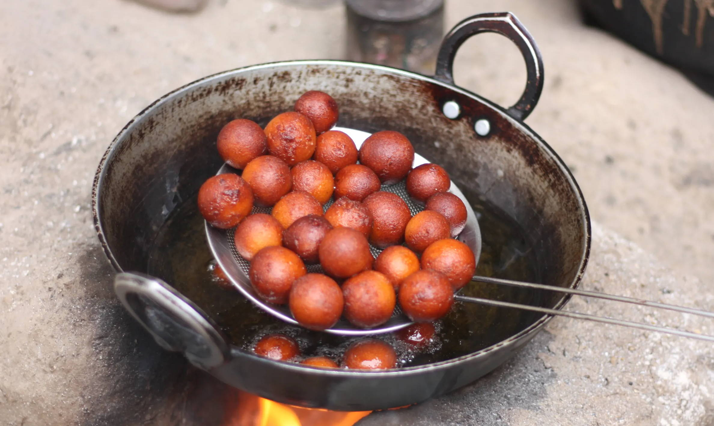
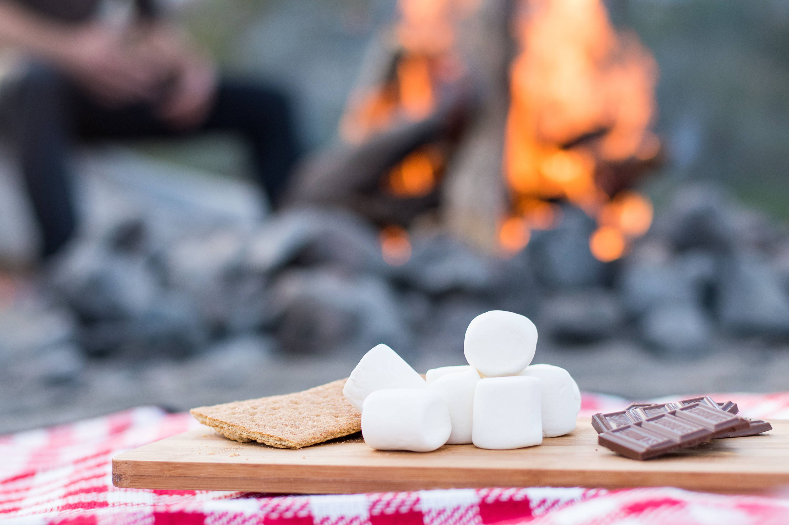
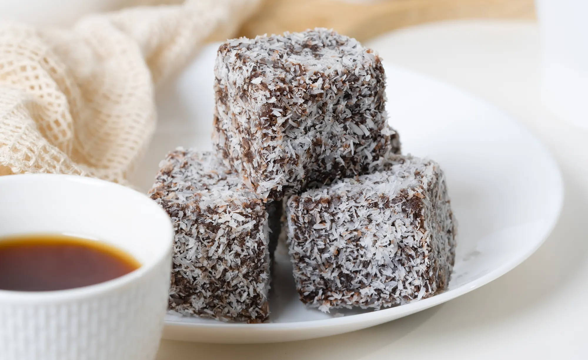
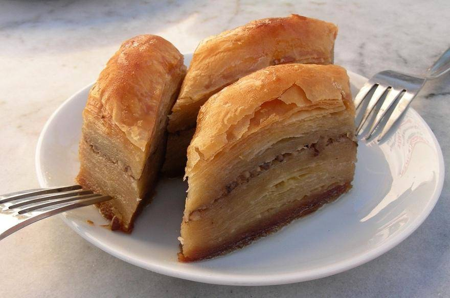

In this page, you will find 9 various desserts that encompass the traditions and cultures of its origin. When you get a chance to visit these extraordinary places, make an effort to experience these wonderful sweets.
Squeaky Cheese
Finland
It's unlikely you'll find Leipäjuusto or Finnish squeaky cheese anywhere outside of Finland. The mild cheese is most commonly pan-fried and served with cloudberry jam for dessert or alongside coffee.
Apfelstrudel
Austria
Apfelstrudel or Viennese apple strudel is a close cousin to classic American apple pie. Tart apple is paired with sweet pastry dough for a delicious combination. Austrians love eating it with their afternoon coffee.
Pudim
Brazil
Pudim looks exactly like flan, but the Brazilian version has a softer texture. You'll find this dessert in every restaurant, cafe and home.
Macarons
France
The best-selling pastry in France, this delicate cookie comes in a variety of flavors. Since they're so difficult to make, it's best to go the fancy route and grab a few from the world-renowned pastry shop, Ladurée.
Chocolate
Switzerland
Switzerland may not be the first to come to mind when you think of foodie countries around the world, but it has a lot to offer. Aside from delicious cheeses and wine, the Swiss know how to make good chocolate. During your visit, take the Belle Epoque Chocolate train to the Cailler factory, the birthplace of milk chocolate.
Gulab Jamun
India
Gulab jamun is easily one of the best desserts in the world. Imagine a deep-fried doughnut in bitesize form, soaked in a sweet syrup. Now imagine something that’s even better than that, and you’ve got gulab jamun. Gulab jamun is made by mixing dried milk powder, flour, yoghurt and clarified butter with flavourings before rolling into a ball and deep frying. It is then soaked in an infused syrup for a few hours before being topped with crushed nuts and served.
S'Mores
USA
If you’re headed to North America for your summer holidays, one thing you’re bound to try is a s’more - particularly as National S’mores Day is celebrated every 10th of August! Said to be a contraction of the words ‘some’ and ‘more’, s’mores were first eaten around the campfire at Scout camps as far back as the 1920s. A s’more is made up of two biscuits sandwiched together with melted chocolate and marshmallows - traditionally melted over the campfire itself!
Lamingtons
Australia
Lamingtons are traditionally made from a small square of vanilla sponge covered in chocolate and desiccated coconut, but they can also contain a layer of jam sandwiching two lamington halves. Lamingtons are said to be named after Lord Lamington, who served as the Governor of Queensland in the late 1890s. The story goes that he had some unexpected guests, so his chef dipped leftover vanilla sponge cake in chocolate and coconut before serving them to the guests. This adds even more fuel to the fire that says the world’s best desserts are often created by accident!
Baklava
Middle East
No list of the world’s best sweets and desserts would be complete without baklava from the Middle East. It’s a sweet pudding, often served in restaurants at the end of a meal when you’re given the bill, but you can also order it from cafes as a mid-morning or afternoon snack. Baklava is made from layers of paper-thin filo pastry, butter, chopped nuts and a sweet syrup fragranced with rose or orange blossom water. It’s normally made in big tins, baked and then drizzled with even more syrup before cutting into smaller pieces.